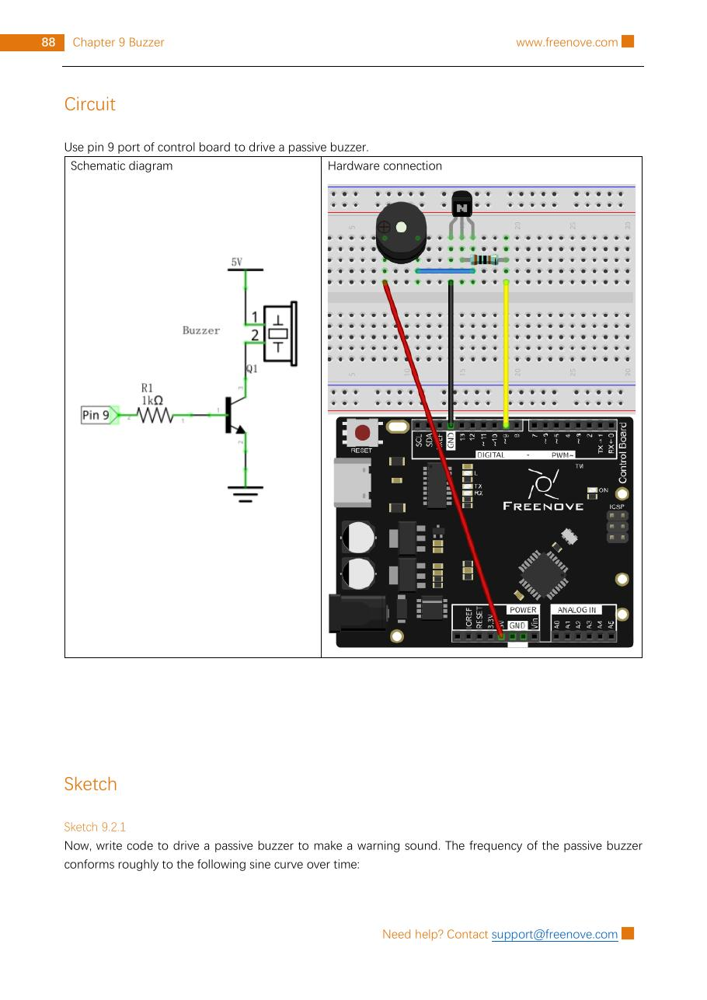

Use pin 9 to send many pitches to a passive buzzer through the kit’s NPN transistor circuit. The pitch will glide from about 1500 Hz to 2500 Hz and back again, making a rising-and-falling warning sound.
Gather the parts
Uno-compatible board and USB cable
Breadboard
1 passive buzzer
1 NPN transistor (the kit’s 8050)
1 × 1 kΩ resistor
4 jumper wires
Important: use a passive buzzer. Unlike an active buzzer, it does not choose a pitch by itself; the changing signal from the Arduino chooses the pitch. If you are unsure which one you have, stop and compare it with the source image before wiring.
Build it, one check at a time
Step 1 — Study the reference circuit
Keep USB unplugged. This unchanged page from the permitted Freenove tutorial shows the schematic and breadboard layout for Project 9.2. It is your map for the exact rows, transistor orientation, and buzzer polarity.

Reference image: Freenove Ultimate Starter Kit, Tutorial.pdf, Chapter 9, Project 9.2, PDF page 92 / printed page 88. Rasterized unchanged from the permitted source pack under CC BY-NC-SA 3.0.
Step 2 — Build the transistor switch
Place the kit’s NPN transistor exactly as it appears in the reference layout. Do not guess its leg order. Connect pin 9 → 1 kΩ resistor → transistor base. Connect the transistor emitter to GND. The 1 kΩ resistor limits the small control current into the base.
Step 3 — Add the passive buzzer
Follow the reference image to connect the passive buzzer between 5 V and the transistor collector. Match the buzzer’s marked polarity and the shown breadboard rows. The transistor lets the board control the buzzer circuit without asking a single Arduino pin to supply the buzzer’s working current directly.
Before plugging USB back in, trace the whole route with your finger: pin 9 → 1 kΩ → base; emitter → GND; and the buzzer’s 5 V → collector path.
Step 4 — Upload the pitch sweep
Connect USB, select your Uno-compatible board and serial port in Arduino IDE, then upload this original sketch.
What the code means:tone() sends a square wave at the requested frequency. sin() creates a smooth value from −1 to +1, so adding it to 2000 produces roughly 2000 ± 500 Hz. The Arduino math function needs radians, which is why the code converts degrees using PI / 180.0.
Step 5 — Listen and troubleshoot
You should hear a smooth rising-and-falling warning sound. It is not a stored song: the code keeps changing the frequency, and the passive buzzer turns those changes into changing pitch. If you hear nothing or only a steady sound:
Unplug USB before moving wires.
Confirm you used a passive, not active, buzzer.
Compare every breadboard row, transistor orientation, and buzzer polarity with the reference image.
Check pin 9, the 1 kΩ resistor, transistor base, collector, emitter, 5 V, and GND paths.
Confirm the sketch calls tone(buzzerPin, toneVal) and that the correct board and port were selected.
Tiny challenge
Predict what will happen if you change sweepSize from 500 to 100. Upload the change, listen for a narrower pitch glide, then restore 500. Explain why changing a frequency value changes the sound even though the wiring stays the same.
The unchanged reference image and upstream material are from Freenove’s Ultimate Starter Kit and are used under CC BY-NC-SA 3.0. Attribution, noncommercial, and ShareAlike requirements apply.